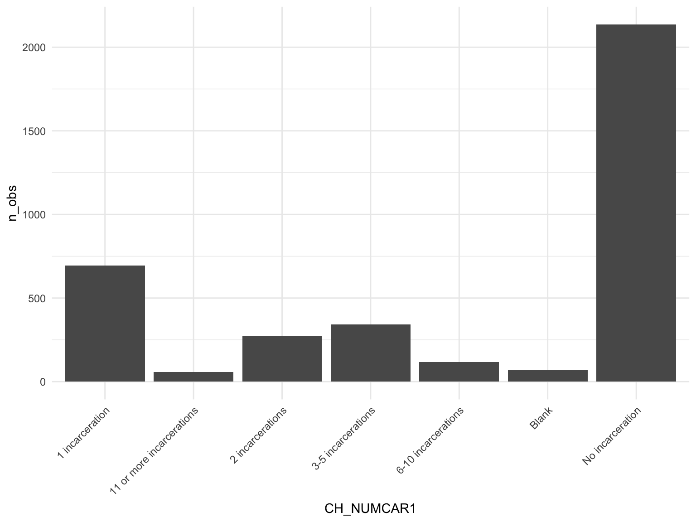

Exploratory Data Analysis
Demographics
#Table 1
table1(~ V0005 + AGE_CAT + V2982 + EDUCATION + SES_INCOMEMTH | MENTAL_HISTORY_BINARY, data = total_df, overall = "Total")| No history of mental health condition(s) (N=12997) |
History of mental health condition(s) (N=4884) |
Total (N=17881) |
|
|---|---|---|---|
| Sex | |||
| Male | 10898 (83.9%) | 3157 (64.6%) | 14055 (78.6%) |
| Female | 2099 (16.1%) | 1727 (35.4%) | 3826 (21.4%) |
| Age Group | |||
| < 25 yrs | 2027 (15.6%) | 741 (15.2%) | 2768 (15.5%) |
| 25-34 | 4409 (33.9%) | 1552 (31.8%) | 5961 (33.3%) |
| 35-44 | 3930 (30.2%) | 1623 (33.2%) | 5553 (31.1%) |
| 45-54 | 1891 (14.5%) | 756 (15.5%) | 2647 (14.8%) |
| 55-64 | 597 (4.6%) | 182 (3.7%) | 779 (4.4%) |
| 65-96 | 143 (1.1%) | 30 (0.6%) | 173 (1.0%) |
| Unknown | 0 (0%) | 0 (0%) | 0 (0%) |
| Race/Ethnicity | |||
| White non-Hispanic | 3832 (29.5%) | 2456 (50.3%) | 6288 (35.2%) |
| Black non-Hispanic | 5691 (43.8%) | 1403 (28.7%) | 7094 (39.7%) |
| Hispanic | 2727 (21.0%) | 647 (13.2%) | 3374 (18.9%) |
| American Indian, Alaska Native non-Hispanic | 243 (1.9%) | 97 (2.0%) | 340 (1.9%) |
| Asian, Pacific Islander, Native Hawaiian non-Hispanic | 162 (1.2%) | 34 (0.7%) | 196 (1.1%) |
| Multiple Races reported, non-Hispanic | 321 (2.5%) | 240 (4.9%) | 561 (3.1%) |
| Missing | 21 (0.2%) | 7 (0.1%) | 28 (0.2%) |
| Education | |||
| Never attended or attended kindergarten only | 42 (0.3%) | 14 (0.3%) | 56 (0.3%) |
| First grade | 35 (0.3%) | 8 (0.2%) | 43 (0.2%) |
| Second grade | 25 (0.2%) | 5 (0.1%) | 30 (0.2%) |
| Third grade | 51 (0.4%) | 15 (0.3%) | 66 (0.4%) |
| Fourth grade | 51 (0.4%) | 20 (0.4%) | 71 (0.4%) |
| Fifth grade | 69 (0.5%) | 26 (0.5%) | 95 (0.5%) |
| Sixth grade | 236 (1.8%) | 81 (1.7%) | 317 (1.8%) |
| Seventh grade | 269 (2.1%) | 132 (2.7%) | 401 (2.2%) |
| Eighth grade | 683 (5.3%) | 334 (6.8%) | 1017 (5.7%) |
| Ninth grade | 1500 (11.5%) | 561 (11.5%) | 2061 (11.5%) |
| Tenth grade | 2074 (16.0%) | 747 (15.3%) | 2821 (15.8%) |
| Eleventh grade | 2467 (19.0%) | 799 (16.4%) | 3266 (18.3%) |
| Twelfth grade | 3323 (25.6%) | 1145 (23.4%) | 4468 (25.0%) |
| College freshman | 525 (4.0%) | 272 (5.6%) | 797 (4.5%) |
| College sophomore | 749 (5.8%) | 356 (7.3%) | 1105 (6.2%) |
| College junior | 200 (1.5%) | 85 (1.7%) | 285 (1.6%) |
| College senior | 347 (2.7%) | 158 (3.2%) | 505 (2.8%) |
| Graduate school one year | 55 (0.4%) | 30 (0.6%) | 85 (0.5%) |
| Graduate school two or more years | 187 (1.4%) | 83 (1.7%) | 270 (1.5%) |
| Attended school in other country/system not comparable to grades | 70 (0.5%) | 8 (0.2%) | 78 (0.4%) |
| Don't know | 22 (0.2%) | 3 (0.1%) | 25 (0.1%) |
| Missing | 17 (0.1%) | 2 (0.0%) | 19 (0.1%) |
| Monthly Income in Month Before Arrest | |||
| No income | 229 (1.8%) | 114 (2.3%) | 343 (1.9%) |
| $1 - $199 | 416 (3.2%) | 170 (3.5%) | 586 (3.3%) |
| $200 - $399 | 835 (6.4%) | 340 (7.0%) | 1175 (6.6%) |
| $400 - $599 | 938 (7.2%) | 500 (10.2%) | 1438 (8.0%) |
| $600 - $799 | 750 (5.8%) | 360 (7.4%) | 1110 (6.2%) |
| $800 - $999 | 869 (6.7%) | 346 (7.1%) | 1215 (6.8%) |
| $1,000 - $1,199 | 1051 (8.1%) | 374 (7.7%) | 1425 (8.0%) |
| $1,200 - $1,499 | 1190 (9.2%) | 363 (7.4%) | 1553 (8.7%) |
| $1,500 - $1,999 | 1016 (7.8%) | 339 (6.9%) | 1355 (7.6%) |
| $2,000 - $2,499 | 964 (7.4%) | 308 (6.3%) | 1272 (7.1%) |
| $2,500 - $4,999 | 1147 (8.8%) | 410 (8.4%) | 1557 (8.7%) |
| $5,000 - $7,499 | 519 (4.0%) | 189 (3.9%) | 708 (4.0%) |
| $7,500 or more | 872 (6.7%) | 295 (6.0%) | 1167 (6.5%) |
| Don't know | 492 (3.8%) | 148 (3.0%) | 640 (3.6%) |
| Missing | 1709 (13.1%) | 628 (12.9%) | 2337 (13.1%) |
Incarceration-Related Variables
Combined
#Table 1
table1(~ V0005 + AGE_CAT + V2982 + EDUCATION + SES_INCOMEMTH | MENTAL_HISTORY_BINARY, data = total_df, overall = "Total")| No history of mental health condition(s) (N=12997) |
History of mental health condition(s) (N=4884) |
Total (N=17881) |
|
|---|---|---|---|
| Sex | |||
| Male | 10898 (83.9%) | 3157 (64.6%) | 14055 (78.6%) |
| Female | 2099 (16.1%) | 1727 (35.4%) | 3826 (21.4%) |
| Age Group | |||
| < 25 yrs | 2027 (15.6%) | 741 (15.2%) | 2768 (15.5%) |
| 25-34 | 4409 (33.9%) | 1552 (31.8%) | 5961 (33.3%) |
| 35-44 | 3930 (30.2%) | 1623 (33.2%) | 5553 (31.1%) |
| 45-54 | 1891 (14.5%) | 756 (15.5%) | 2647 (14.8%) |
| 55-64 | 597 (4.6%) | 182 (3.7%) | 779 (4.4%) |
| 65-96 | 143 (1.1%) | 30 (0.6%) | 173 (1.0%) |
| Unknown | 0 (0%) | 0 (0%) | 0 (0%) |
| Race/Ethnicity | |||
| White non-Hispanic | 3832 (29.5%) | 2456 (50.3%) | 6288 (35.2%) |
| Black non-Hispanic | 5691 (43.8%) | 1403 (28.7%) | 7094 (39.7%) |
| Hispanic | 2727 (21.0%) | 647 (13.2%) | 3374 (18.9%) |
| American Indian, Alaska Native non-Hispanic | 243 (1.9%) | 97 (2.0%) | 340 (1.9%) |
| Asian, Pacific Islander, Native Hawaiian non-Hispanic | 162 (1.2%) | 34 (0.7%) | 196 (1.1%) |
| Multiple Races reported, non-Hispanic | 321 (2.5%) | 240 (4.9%) | 561 (3.1%) |
| Missing | 21 (0.2%) | 7 (0.1%) | 28 (0.2%) |
| Education | |||
| Never attended or attended kindergarten only | 42 (0.3%) | 14 (0.3%) | 56 (0.3%) |
| First grade | 35 (0.3%) | 8 (0.2%) | 43 (0.2%) |
| Second grade | 25 (0.2%) | 5 (0.1%) | 30 (0.2%) |
| Third grade | 51 (0.4%) | 15 (0.3%) | 66 (0.4%) |
| Fourth grade | 51 (0.4%) | 20 (0.4%) | 71 (0.4%) |
| Fifth grade | 69 (0.5%) | 26 (0.5%) | 95 (0.5%) |
| Sixth grade | 236 (1.8%) | 81 (1.7%) | 317 (1.8%) |
| Seventh grade | 269 (2.1%) | 132 (2.7%) | 401 (2.2%) |
| Eighth grade | 683 (5.3%) | 334 (6.8%) | 1017 (5.7%) |
| Ninth grade | 1500 (11.5%) | 561 (11.5%) | 2061 (11.5%) |
| Tenth grade | 2074 (16.0%) | 747 (15.3%) | 2821 (15.8%) |
| Eleventh grade | 2467 (19.0%) | 799 (16.4%) | 3266 (18.3%) |
| Twelfth grade | 3323 (25.6%) | 1145 (23.4%) | 4468 (25.0%) |
| College freshman | 525 (4.0%) | 272 (5.6%) | 797 (4.5%) |
| College sophomore | 749 (5.8%) | 356 (7.3%) | 1105 (6.2%) |
| College junior | 200 (1.5%) | 85 (1.7%) | 285 (1.6%) |
| College senior | 347 (2.7%) | 158 (3.2%) | 505 (2.8%) |
| Graduate school one year | 55 (0.4%) | 30 (0.6%) | 85 (0.5%) |
| Graduate school two or more years | 187 (1.4%) | 83 (1.7%) | 270 (1.5%) |
| Attended school in other country/system not comparable to grades | 70 (0.5%) | 8 (0.2%) | 78 (0.4%) |
| Don't know | 22 (0.2%) | 3 (0.1%) | 25 (0.1%) |
| Missing | 17 (0.1%) | 2 (0.0%) | 19 (0.1%) |
| Monthly Income in Month Before Arrest | |||
| No income | 229 (1.8%) | 114 (2.3%) | 343 (1.9%) |
| $1 - $199 | 416 (3.2%) | 170 (3.5%) | 586 (3.3%) |
| $200 - $399 | 835 (6.4%) | 340 (7.0%) | 1175 (6.6%) |
| $400 - $599 | 938 (7.2%) | 500 (10.2%) | 1438 (8.0%) |
| $600 - $799 | 750 (5.8%) | 360 (7.4%) | 1110 (6.2%) |
| $800 - $999 | 869 (6.7%) | 346 (7.1%) | 1215 (6.8%) |
| $1,000 - $1,199 | 1051 (8.1%) | 374 (7.7%) | 1425 (8.0%) |
| $1,200 - $1,499 | 1190 (9.2%) | 363 (7.4%) | 1553 (8.7%) |
| $1,500 - $1,999 | 1016 (7.8%) | 339 (6.9%) | 1355 (7.6%) |
| $2,000 - $2,499 | 964 (7.4%) | 308 (6.3%) | 1272 (7.1%) |
| $2,500 - $4,999 | 1147 (8.8%) | 410 (8.4%) | 1557 (8.7%) |
| $5,000 - $7,499 | 519 (4.0%) | 189 (3.9%) | 708 (4.0%) |
| $7,500 or more | 872 (6.7%) | 295 (6.0%) | 1167 (6.5%) |
| Don't know | 492 (3.8%) | 148 (3.0%) | 640 (3.6%) |
| Missing | 1709 (13.1%) | 628 (12.9%) | 2337 (13.1%) |
Federal
#Criminal History
federal_df %>%
count(CH_CRIMHIST) %>%
rename("Criminal Hisotry" = CH_CRIMHIST) %>%
knitr::kable() | Criminal Hisotry | n |
|---|---|
| (0000001) First timer, current violent offense | 328 |
| (0000002) First timer, current drug offense | 536 |
| (0000003) First timer, current other offense | 714 |
| (0000004) Recidivist, current and prior violent | 246 |
| (0000005) Recidivist, current violent offense but not prior | 227 |
| (0000006) Recidivist, current nonviolent offense but prior violent | 449 |
| (0000007) Recidivist, current and priors only drugs | 183 |
| (0000008) Recidivist, prior minor offenses only | 14 |
| (0000009) Recidivist, prior minor offenses only | 28 |
| (0000010) Recidivist, priors any offenses other than violent or only minor or drugs | 936 |
| (9999999) Missing | 25 |
#Type of Offense
federal_df %>%
count(TYPEOFFENSE) %>%
rename("Type of Offense" = TYPEOFFENSE) %>%
arrange(desc(n)) %>%
knitr::kable()| Type of Offense | n |
|---|---|
| (0000017) Drug traffic | 1029 |
| (0000021) Other public order | 497 |
| (0000019) Weapons | 483 |
| (0000006) Robbery | 425 |
| (0000013) Fraud | 383 |
| (0000016) Drug possession | 207 |
| (0000022) Other | 102 |
| (0000007) Assault | 95 |
| (0000018) Other drug | 95 |
| (0000001) Murder | 87 |
| (0000005) Other sexual assualt | 32 |
| (0000010) Larceny | 31 |
| (9999998) Missing | 28 |
| (0000014) Stolen property | 25 |
| (0000002) Manslaughter | 24 |
| (0000003) Kidnapping | 24 |
| (0000009) Burglary | 23 |
| (9999999) Blank | 23 |
| (0000008) Other violent | 18 |
| (0000011) Mvt | 13 |
| (0000004) Rape | 10 |
| (0000020) Dwi | 10 |
| (0000012) Arson | 8 |
| (0000015) Other property | 7 |
| (9999997) DK/refused | 7 |
#Distribution for number of incarcerations
federal_df %>%
group_by(CH_NUMCAR1) %>%
summarise(
n_obs = n()
) %>%
mutate(
CH_NUMCAR1 = gsub(".*)", "", CH_NUMCAR1)
) %>%
ungroup() %>%
ggplot(aes(x = CH_NUMCAR1, y = n_obs)) +
geom_bar(stat = "identity") +
theme(axis.text.x = element_text(angle = 45, hjust = 1))
State
#Criminal History
state_df %>%
count(CH_CRIMHIST) %>%
rename("Criminal Hisotry" = CH_CRIMHIST) %>%
knitr::kable() | Criminal Hisotry | n |
|---|---|
| (0000001) First timer, current violent offense | 2667 |
| (0000002) First timer, current drug offense | 771 |
| (0000003) First timer, current other offense | 889 |
| (0000004) Recidivist, current and prior violent | 2062 |
| (0000005) Recidivist, current violent offense but not prior | 2238 |
| (0000006) Recidivist, current nonviolent offense but prior violent | 1576 |
| (0000007) Recidivist, current and priors only drugs | 549 |
| (0000008) Recidivist, prior minor offenses only | 47 |
| (0000009) Recidivist, prior minor offenses only | 51 |
| (0000010) Recidivist, priors any offenses other than violent or only minor or drugs | 3586 |
| (9999999) Missing | 63 |
#Type of Offense
state_df %>%
count(TYPEOFFENSE) %>%
rename("Type of Offense" = TYPEOFFENSE) %>%
arrange(desc(n)) %>%
knitr::kable()| Type of Offense | n |
|---|---|
| (0000017) Drug traffic | 1758 |
| (0000006) Robbery | 1700 |
| (0000001) Murder | 1466 |
| (0000007) Assault | 1408 |
| (0000016) Drug possession | 1341 |
| (0000009) Burglary | 1091 |
| (0000021) Other public order | 966 |
| (0000005) Other sexual assualt | 837 |
| (0000010) Larceny | 648 |
| (0000013) Fraud | 598 |
| (0000004) Rape | 536 |
| (0000020) Dwi | 352 |
| (0000019) Weapons | 315 |
| (0000002) Manslaughter | 265 |
| (0000011) Mvt | 226 |
| (0000003) Kidnapping | 183 |
| (9999999) Blank | 155 |
| (0000014) Stolen property | 143 |
| (0000008) Other violent | 140 |
| (0000018) Other drug | 139 |
| (0000012) Arson | 88 |
| (0000015) Other property | 81 |
| (9999998) Missing | 35 |
| (0000022) Other | 26 |
| (9999997) DK/refused | 2 |
#Distribution for number of incarcerations
state_df %>%
group_by(CH_NUMCAR1) %>%
summarise(
n_obs = n()
) %>%
mutate(
CH_NUMCAR1 = gsub(".*)", "", CH_NUMCAR1)
) %>%
ungroup() %>%
ggplot(aes(x = CH_NUMCAR1, y = n_obs)) +
geom_bar(stat = "identity") +
theme(axis.text.x = element_text(angle = 45, hjust = 1))
HIV
#HIV tested
federal_df %>%
group_by(V2288) %>%
summarize(n_obs = n()) %>%
knitr::kable()| V2288 | n_obs |
|---|---|
| (1) Yes | 2673 |
| (2) No | 298 |
| (7) Don’t know | 398 |
| (8) Refused | 1 |
| NA | 316 |
federal_df %>%
group_by( V2288) %>%
summarize(n_obs = n()) %>%
ungroup() %>%
ggplot(aes(x = V2288, y = n_obs, fill = V2288)) +
theme(axis.text.x = element_text(angle = 90, vjust = .5, hjust = 1)) +
geom_bar(stat = "identity") 
#HIV test result
federal_df %>%
group_by(MCMH_RSLT_HIV) %>%
summarise(n_obs = n()) %>%
mutate(
MCMH_RSLT_HIV = fct_reorder(MCMH_RSLT_HIV, n_obs)
) %>%
ggplot(aes(x = MCMH_RSLT_HIV, y = n_obs, fill = MCMH_RSLT_HIV)) +
theme(axis.text.x = element_text(angle = 90, vjust = .5, hjust = 1)) +
geom_bar(stat = "identity") 
#Ever used a needle to inject drugs
federal_df %>%
group_by(DRUG_INJECT_CB) %>%
summarize(n_obs = n()) %>%
ungroup() %>%
ggplot(aes(x = DRUG_INJECT_CB, y = n_obs, fill = DRUG_INJECT_CB)) +
geom_bar(stat = "identity") 
Mental Health
#ever taken a medication for mental health
federal_df %>%
group_by(V2409) %>%
summarize(n_obs = n()) %>%
knitr::kable()| V2409 | n_obs |
|---|---|
| (1) Yes | 704 |
| (2) No | 2887 |
| (7) Don’t know | 9 |
| (8) Refused | 30 |
| NA | 56 |
federal_df %>%
group_by(V2409) %>%
summarize(n_obs = n()) %>%
mutate(
V2409 = fct_reorder(V2409, n_obs)) %>%
ungroup() %>%
ggplot(aes(x = V2409, y = n_obs, fill = V2409)) +
geom_bar(stat = "identity")# TAKEN MEDICATION FOR A MENTAL CONDITION SINCE ADMISSION
federal_df %>%
group_by(V2412) %>%
summarize(n_obs = n()) %>%
knitr::kable()| V2412 | n_obs |
|---|---|
| (1) Yes | 472 |
| (2) No | 232 |
| NA | 2982 |
federal_df %>%
group_by(V2412) %>%
summarize(n_obs = n()) %>%
drop_na() %>%
mutate(
V2412 = fct_reorder(V2412, n_obs)) %>%
ungroup() %>%
ggplot(aes(x = V2412, y = n_obs, fill = V2412)) +
geom_bar(stat = "identity")# Mental Hosp - year before arrest - MCMH_mhospyr from client
federal_df %>%
group_by(MCMH_MHOSPYR) %>%
summarize(n_obs = n()) %>%
knitr::kable()| MCMH_MHOSPYR | n_obs |
|---|---|
| (0000001) Yes, admitted to mental hospital during the 12 months before arrest | 67 |
| (0000002) No, was not admitted to mental hospital during the 12 months before arrest | 179 |
| (0000004) No, never admitted to stayed overnight at mental hospital | 3343 |
| (9999998) DK/refused | 41 |
| (9999999) Missing | 56 |
federal_df %>%
group_by(MCMH_MHOSPYR) %>%
summarize(n_obs = n()) %>%
filter(MCMH_MHOSPYR %in% c("(0000004) No, never admitted to stayed overnight at mental hospital","(0000001) Yes, admitted to mental hospital during the 12 months before arrest",
"(0000002) No, was not admitted to mental hospital during the 12 months before arrest")) %>%
drop_na() %>%
mutate(
MCMH_MHOSPYR = fct_reorder(MCMH_MHOSPYR, n_obs)) %>%
ungroup() %>%
ggplot(aes(x = MCMH_MHOSPYR, y = n_obs, fill = MCMH_MHOSPYR)) +
geom_bar(stat = "identity")# Mental hosp - since admission - MCMH_mhospadm from client
federal_df %>%
group_by(MCMH_MHOSPADM) %>%
summarize(n_obs = n()) %>%
knitr::kable()| MCMH_MHOSPADM | n_obs |
|---|---|
| (0000001) Yes, admitted to mental hospital since admission | 69 |
| (0000002) No, was not admitted to mental hospital since admission | 178 |
| (0000004) No, never admitted to stayed overnight at mental hospital | 3343 |
| (9999998) DK/refused | 40 |
| (9999999) Missing | 56 |
federal_df %>%
group_by(MCMH_MHOSPADM) %>%
summarize(n_obs = n()) %>%
filter(!MCMH_MHOSPADM %in% c("(9999999) Missing","(9999998) DK/refused")) %>%
drop_na() %>%
mutate(
MCMH_MHOSPADM = fct_reorder(MCMH_MHOSPADM, n_obs)) %>%
ungroup() %>%
ggplot(aes(x = MCMH_MHOSPADM, y = n_obs, fill = MCMH_MHOSPADM)) +
geom_bar(stat = "identity")
# MH Treatment Continuation (one year prior to arrest and since admission)
state_tx = state_df %>%
group_by(MCMH_MH_TREATMENT_PA, MCMH_MH_TREATMENT_AD) %>%
summarize(n_obs = n()) %>%
mutate(
MCMH_MH_TREATMENT_PA = gsub(".* ", "", MCMH_MH_TREATMENT_PA),
MCMH_MH_TREATMENT_AD = gsub(".* ", "", MCMH_MH_TREATMENT_AD),
tx_pa_ad = str_c(MCMH_MH_TREATMENT_PA, '/',MCMH_MH_TREATMENT_AD)
) %>%
ungroup() %>%
mutate(
sum = sum(n_obs),
percent = (n_obs/sum) * 100 ) ## `summarise()` has grouped output by 'MCMH_MH_TREATMENT_PA'. You can override
## using the `.groups` argument.federal_tx = federal_df %>%
group_by(MCMH_MH_TREATMENT_PA, MCMH_MH_TREATMENT_AD) %>%
summarize(n_obs = n()) %>%
mutate(
MCMH_MH_TREATMENT_PA = gsub(".* ", "", MCMH_MH_TREATMENT_PA),
MCMH_MH_TREATMENT_AD = gsub(".* ", "", MCMH_MH_TREATMENT_AD),
tx_pa_ad = str_c(MCMH_MH_TREATMENT_PA, '/',MCMH_MH_TREATMENT_AD)
) %>%
ungroup() %>%
mutate(
sum = sum(n_obs),
percent = (n_obs/sum) * 100 ) ## `summarise()` has grouped output by 'MCMH_MH_TREATMENT_PA'. You can override
## using the `.groups` argument.colors <- c("State Prisons" = "blue", "Federal Prisons" = "red")
ggplot() +
geom_line(data = state_tx, aes(x = tx_pa_ad, y = percent, group = 1, color = "State Prisons")) +
geom_line(data = federal_tx, aes(x = tx_pa_ad, y = percent, group = 1, color = "Federal Prisons")) +
labs(
title = "Mental Health Treatment Continuation",
x = "1 Year Prior to Arrest/Since Admission",
y = "Percent (%) of Survey Respondents",
color = "Legend"
) +
scale_color_manual(values = colors)